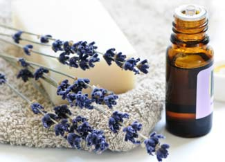

Making handmade soap is something easy and fun that anyone can do in just a couple of hours. By making soap at home, you can ensure that your skin will be chemical-free while remaining soft and soothed. Allow your nose to flirt with different s cents, whether it’s a classic such as lavender, or a combination that you create. With thousands of s cents to choose from, your inventions can be endless. So try making your own soap: Your skin and nose deserve it!
Before you start, you’re going to need the following supplies:
To make a specific scent, you will need scented oils that you can find at your local health foods or botanical store, or you can make infusions yourself with fresh herbs. All you need to do is to infuse the herbs in oil - like olive oil or another light oil base - by heating them together. To learn how to do this, read Body and Soul from The Herb Companion.
Once you have your scented oils, you can make your soap. An easy way to do it is to use an already-made soap base that you can most likely find at a local natural products store. You also can order online from places like the Soap Salon or the Sun Feather Natural Soap Co. There are many other places to buy soap bases, but remember to make sure the products are all natural for a completely organic experience. For this easier method of making soap, read Soothing Soaps. Or you can make the soap base yourself by using lye and different types of fats. Read General Notes on Soap-making or Scented Essentials: How to Make Soap for more on this method.
Read How to Make Soap for more general soap-making advice before you begin.
To try out lots of soap recipes, check out Scented Essentials. The article lists nine different recipes that use ingredients such as lavender, chamomile, garden mint and more. There are even a couple of soap recipes for men. While some may stereotype scented soap as “feminine,” there are many s cents that men can enjoy besides just Mountain Fresh. For more masculine soap recipes, read The Scent of a ... Man.
If you really like making soap, you might even think about starting a small business! According to Make Money the Clean Way, you can earn about $400 extra each month by selling soap.
Do you have fresh, new ideas for making soap? Please share your tips and ideas by posting a comment below.
|
 ISTOCKPHOTO/ELENA ELISSEEVA Create your own soap s cents by experimenting with different kinds of essential oils. |
|
|